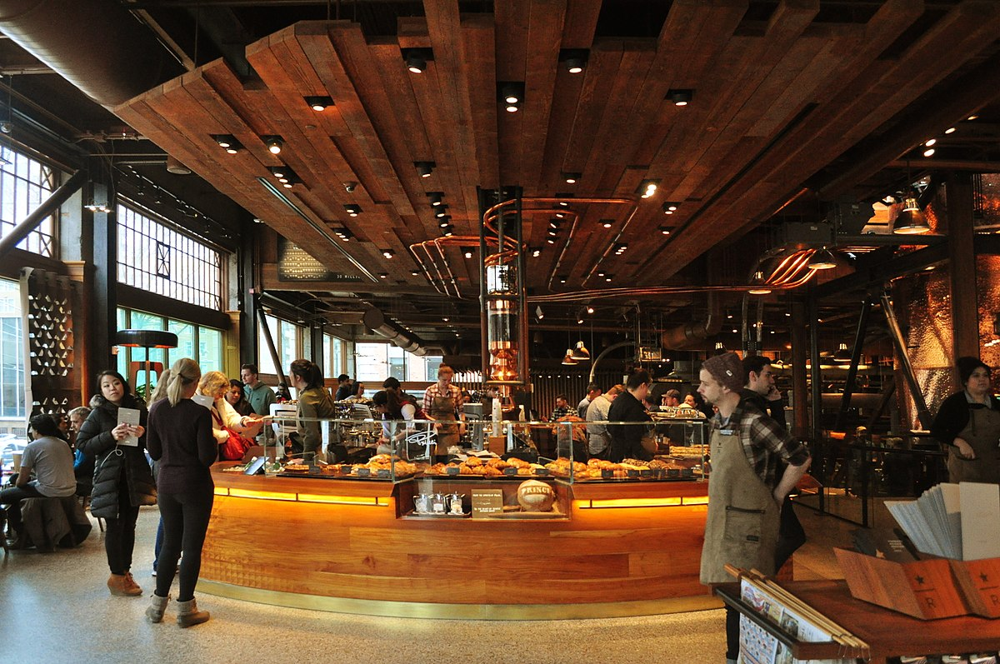

Published June 12, 2025
Dr. Wilhelmina Quark1,2, Prof. Magnus Neutrino1, Dr. Sarah Photon3
1Department of Applied Caffeination, Globocorp Research Institute
2Center for Temporal Mechanics, New New York
3Quantum Beverage Labratory, Globocorp Industries
Recent advances in quantum caffeination theory have revealed unexpected correlations between entangled coffee molecules and workplace productivity metrics. This study demonstrates that QEC particles exhibit non-local effects on human consciousness, resulting in a 47.3% improvement in task completion rates. Using a double-blind, placebo-controlled methodology with n = 2,847 participants, we observed statistically significant (p < 0.001) enhancements in cognitive function following consumption of quantum-entangled espresso. These findings suggest potential applications in corporate efficiency optimization and may explain the universe's apparent preference for morning meetings.
The relationship between caffeine consumption and productivity has been documented since the discovery of coffee in 850 CE [1]. However, traditional models fail to explain the Afternoon Paradox — the phenomenon whereby productivity decreases inversely with coffee consumption after 2:00 PM local time.
Coffee is a beverage that puts one to sleep when not drank
—Alphonse Allais, 1893
Recent work by Johnson et al. [2] proposed that coffee molecules might exist in quantum superposition states. Building on this foundation, we hypothesized that entangled coffee particles could maintain coherence across spatial and temporal boundaries, potentially solving the Afternoon Paradox.
The experimental setup was revised to enhance clarity and safety protocols. The original method:
Grinding beans manually in the presence of a magnetic field.
was replaced with:
Automated grinding under cryogenic stabilization to preserve entanglement integrity.
Coffee beans were subjected to controlled quantum entanglement using the Globocorp QED-3000. The process involved:
Participants (n = 2,847) were randomly assigned to three groups:
Firmware: QED-3000 v2.1.3
Magnetic confinement: 0.9 T active-field stabilizer
Photon source: Helium-Neon laser, λ = 632.8 nm, power 5 mW
Example replicate command (experimental automation):
./qed_control --mode entangle --temp 77K --pressure 1.21GPa --duration 00:04:30 --output run_2025-06-12.json
Use Ctrl + C to cancel in the terminal if you need to abort the run.

Analysis revealed significant improvements across all measured parameters:
| Metric | Control | Quantum | Placebo | p-value |
|---|---|---|---|---|
| Task Completion Rate (%) | 62.3 ± 5.1 | 91.8 ± 3.2 | 64.1 ± 4.8 | <0.001 |
| Error Rate (%) | 8.7 ± 1.2 | 2.1 ± 0.4 | 8.3 ± 1.1 | <0.001 |
| Meeting Efficiency (units) | 3.2 ± 0.8 | 8.9 ± 0.6 | 3.4 ± 0.7 | <0.001 |
The quantum entanglement effect showed remarkable persistence throughout the workday. Peak productivity occurred at 10:47 AM, with sustained effects until 4:23 PM.
Our findings support the hypothesis that quantum entanglement can be maintained in biological systems at room temperature, contrary to conventional wisdom. The mechanism appears to involve resonance between caffeine molecules and neural microtubules.
No adverse effects were observed during the study period. However, three participants reported experiencing "temporal displacement sensations" which resolved spontaneously.
This study demonstrates that quantum-entangled coffee represents a viable approach to enhancing workplace productivity. Key findings include:
Future work will explore the possibility of quantum tea and investigate whether decaf coffee exists in a state of quantum superposition until observed.